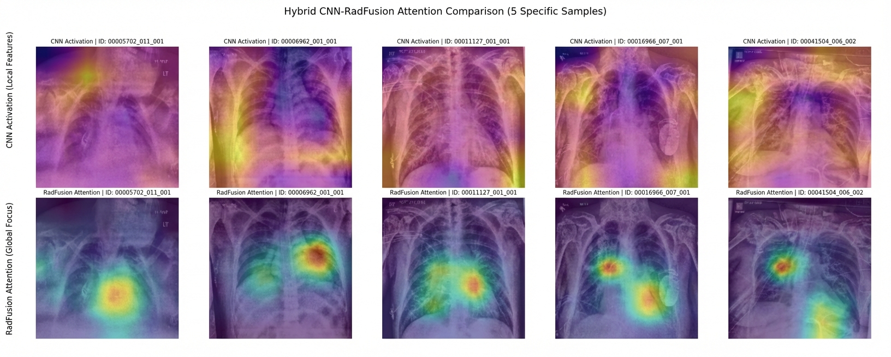
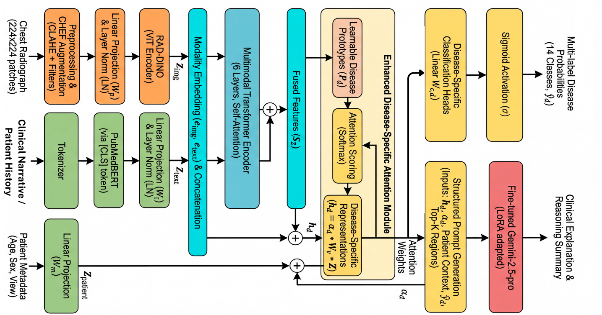
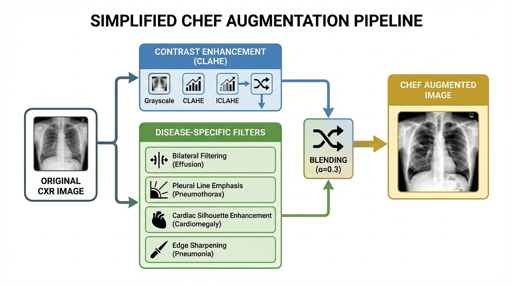
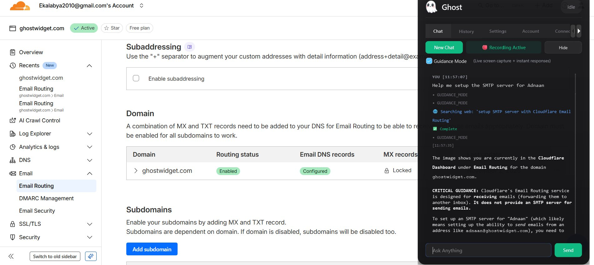

Biomedical Enginnering Researcher | Explainable AI Enthusiast
Email: ekalabya2010 [at] gmail (dot) com
I am a high school student from Kolkata, India. I mainly work in biomedical engineering and have been exploring the applications of explainable AI in medical diagnosis. I have lately been interested in the explainability of Large Language Models and techniques to deal with hallucinations in them, especially in high-stake fields like medical AI.



Novel Deep-Learning Pipeline for Explainable Diagnosis of Thoracic Diseases
Current CNN-based models for diagnosing thoracic diseases lack clinically aligned interpretability and perform suboptimally (AUC ~0.7) on certain pathologies. The kernel size of the CNN limits its ability to captured global patterns. RadFusion introduces a multimodal transformer framework trained on ~600k image-report pairs (combining the MIMIC-CXR and ChestX-Ray14 datasets) to address these probelms. The project introduces a novel augmentation technique called CHEF (Conditional Histogram Equalisation and Feature) augmentation that dynamically blends different augmentation techniques during training to enhance feature generalization and reduce class bias. The project also introduces a novel disease specific attention mechanism that gives a query vector to each disease to capture effective correlations beween features and specific diseases. The model is escpecially useful in busy hospitals where radiologists can supervise multiple models simultaniously to increase their productivity
📄 Read Paper → 📑 GitHub →
📁 GhostWidget/Autonomous Desktop Agent for Managing Memories
Ghost is an AI-powered personal memory assistant, built for usecases where AI needs a lot of context about user's workflow, preferences, or needs. It looks at the screen of the user, proccess the screen recordings in small chunks and builds a vecotr database (FAISS) with the information it sees to build rich context about the user. The videos are pre-proccessed to reduce length and resolution of videos while keeping the key information visible. Afterwards, the videos are fed into the gemini 2.5 flash lite model that generates memory fragments. These memory fragments can form connections with documents, folders, github-commits and other memories. To make it feel like an actual assistant, Ghost can be connected to apps like GitHub. The project is enntirely open-sourced. It also has additional applications in ADHD care.
📑 GitHub →Rank 1 — SparkX, Techfest IIT Bombay (2025)
Asia's largest technology festival. Developed an AI-driven diagnostic framework for chest X-rays for early detection of thoracic diseases.
Brought together leading student innovators from across India and abroad. The system focused on explainability, diagnostic accuracy, and treatment efficiency, demonstrating how deep learning can meaningfully assist healthcare professionals in resource-constrained environments.
Rank 1 — Young Innovators Program (YIP), IIT Kharagpur (2025)
International competition with top 33 teams. Designed a low-cost computer-vision interface for robotic surgical devices.
Enabling intuitive and precise control without expensive proprietary hardware. Presented technical concepts and future improvements in discussions with senior scientists from DRDO's Aerial Delivery R&D Establishment and a distinguished professor from Northeastern University, Boston, gaining valuable research feedback and validation.
Silver Medal — IRIS National Fair, Delhi Cohort (2026)
India's official ISEF selection competition, top 120 researchers. Developed a novel deep-learning architecture for thoracic disease detection.
Emphasizing robustness, interpretability, and clinical relevance. The research contributed to ongoing exploration of AI-assisted medical imaging in public-health contexts.
Rank 1 — SparkX Kolkata Zonal, Techfest
Qualified for the national SparkX finals at IIT Bombay through top performance in the regional AI Olympiad.
Rank 1 — Techfest Olympiad Kolkata Zonal
Achieved highest rank in a combined science and mathematics Olympiad, advancing to national-level competition.
Rank 1 — Competitive Programming, NSHM Kolkata (Times of India)
Secured first place in an inter-school programming contest featuring participants from across Kolkata and neighboring regions.
Rank 1 — Robotics, Logique (DPS Ruby Park)
Won an inter-school robotics competition through design and implementation of an autonomous robotic solution.
{
"interests": [
"Artificial Intelligence & Deep Learning",
"Computer Vision for Healthcare",
"Human–Computer Interaction",
"Robotics & Intelligent Interfaces",
"STEM Education Technology"
]
}